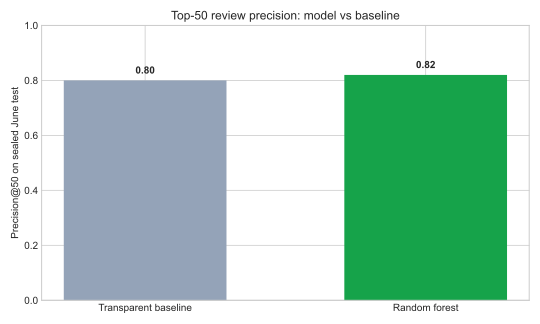
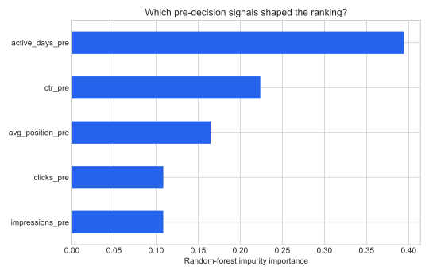
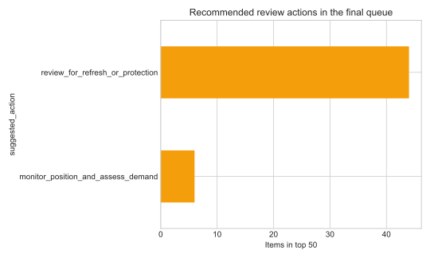

Abstract
This study asks whether safe search-performance signals available by mid-month can rank content items at risk of a later decline in impressions. I aggregate one row per pseudonymized content item, define the outcome only from the later window, and compare a random forest with a transparent weighted rule. Development uses March 2026, while June 2026 remains a sealed temporal test. On the same June rows, the model improves ROC-AUC from 0.542 to 0.573 and average precision from 0.538 to 0.588, with top-50 precision moving from 0.80 to 0.82. The result supports a human review queue with reason codes; it does not prove causality or justify automated content changes.
Introduction / problem statement
Content teams have more pages than they can inspect carefully. The operational decision is: which content items deserve scarce review time first? A useful system should produce a ranked queue, explain why an item surfaced, and leave the final action to a person.
Data
The analysis uses flyrank_pseudonymized_warehouse_release_v20260703, specifically fact_content_daily_performance. One row in the model frame represents one pseudonymized content item. Days 1–15 form the feature window; days 16–month end form the outcome window.
Development
March 1–31, 2026
77,540 content items
38 pseudonymous clients
Sealed temporal test
June 1–30, 2026
79,564 content items
45 pseudonymous clients
Items require GSC availability and at least 100 early-window impressions. Client identity is not a feature. I exclude URLs, queries, product flags, GA4 outcomes, post-decision variables, raw exports, and every field derived from the label.
Methodology
The target equals 1 when average daily impressions after day 15 fall below 80% of average daily impressions during days 1–15. This is an operational proxy for decline, not a statement about content quality.
The five features—each knowable at the decision moment—are early-window impressions, clicks, CTR, average position, and active days. The transparent baseline combines visibility, position opportunity, activity, and CTR gap. The learned model is a regularized random forest (300 trees, depth 8, minimum leaf 50, balanced classes, seed 42).
Results
| Method | ROC-AUC | Average precision | Precision@50 |
|---|---|---|---|
| Transparent baseline | 0.542 | 0.538 | 0.80 |
| Random forest | 0.573 | 0.588 | 0.82 |


Limitations & honest framing
This is observational decision support. It cannot show that any feature causes visibility, that a refresh will recover impressions, or that Google uses these variables as ranking factors. The proxy is sensitive to seasonality, demand shifts, measurement noise, and its within-month horizon. June also contains a different client mix from March. A person must inspect intent, quality, business context, and recent edits before acting.
Ranked recommendations
The deployed queue uses only pseudonymous content IDs. The first ten items are shown below; the reproducible output contains the top 50.
| Rank | Pseudonymous content | Score | Suggested action |
|---|---|---|---|
| 1 | content_9b76202a02885037 | 0.890 | Review for refresh or protection |
| 2 | content_86c96002dd5c69aa | 0.888 | Review for refresh or protection |
| 3 | content_ba98b9ba325cb149 | 0.888 | Review for refresh or protection |
| 4 | content_0aaa197051f58d6f | 0.875 | Monitor position and assess demand |
| 5 | content_8c16bdac48bf7b56 | 0.868 | Review for refresh or protection |
| 6 | content_04cb6b15919bf391 | 0.867 | Review for refresh or protection |
| 7 | content_0a9b787d28fc695c | 0.865 | Review for refresh or protection |
| 8 | content_d402fbbfb15ddfc8 | 0.863 | Review for refresh or protection |
| 9 | content_1b829171cdff7636 | 0.859 | Review for refresh or protection |
| 10 | content_3ecbd0e3911c0a35 | 0.856 | Review for refresh or protection |

Reproducibility
The executed capstone notebook contains the narrative, tables, and figures. The analysis script reads the two monthly partitions with DuckDB over hf://, builds the five-feature frames, trains both approaches, computes metrics, and regenerates the public-safe artifacts. See the full repository for the data contract and earlier framing notebooks.
Acknowledgments & data credit
Built on the FlyRank ML Internship dataset. Thanks to the FlyRank internship team for the pseudonymized warehouse release and learning materials.